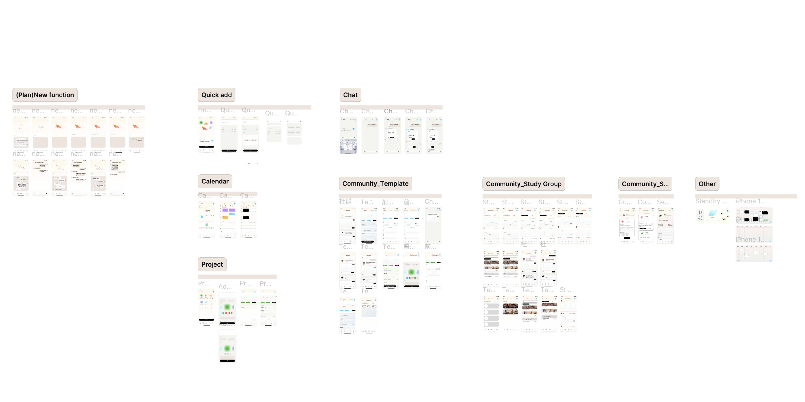
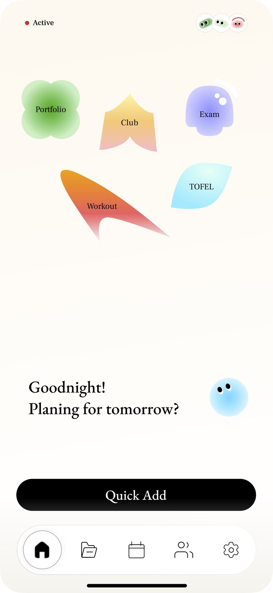
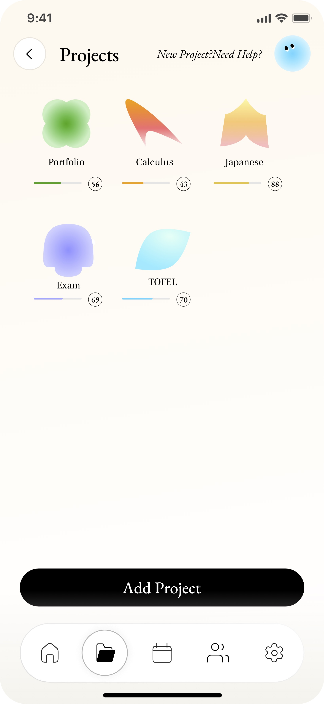
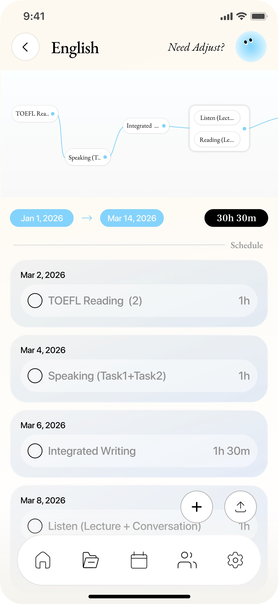
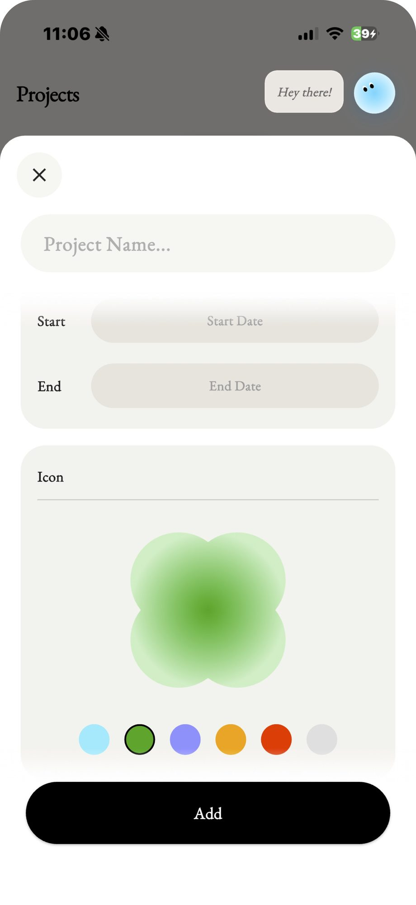
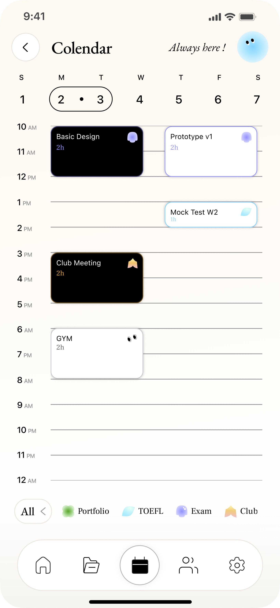
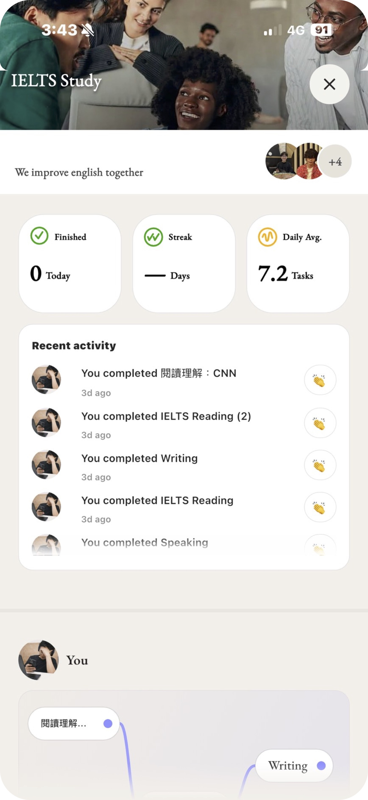
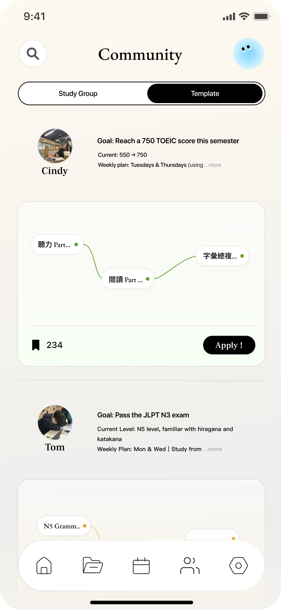
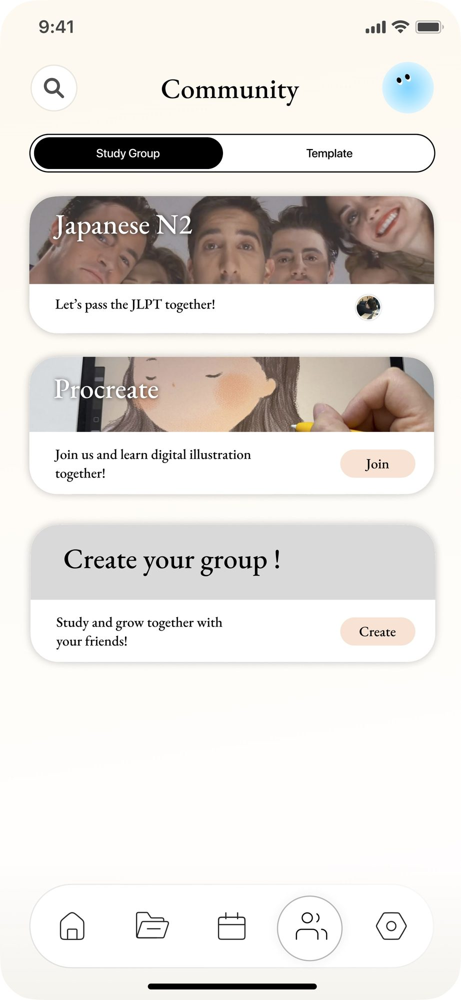

Colendar
Add your subtitle or context line here.
SUMMARY
Colendar is a task-planning tool designed for college students, aimed at increasing their chances of achieving academic goals. Through an engaging, low-friction planning experience and peer accountability features, it helps users stay on track with the goals they set at the beginning of the semester while gradually building stronger time management habits
KEY ACHIEVEMENTS
- 2026 Young Pin Sponsor Award — Finalist
- 2026 NCKU Innovation Dream Project — Finalist
context
Goals are set at the start of the semester, but often fade away by the end.
At the start of the semester, we set various learning and growth goals. But as coursework, activities, and social commitments fill our days, long-term goals are gradually replaced by short-term demands—eventually forgotten or abandoned.
User research
Discover Patterns : Compiling insights from interviews, surveys, and secondary research
We conducted in-depth background research, collecting 52 survey responses and interviewing 10 students from diverse academic backgrounds to explore why students struggle to sustain goal execution, as well as the underlying behavioral patterns and key barriers.


Key insight
Add a headline that states the main insight you want readers to take away.

Key Insight #1
Low urgency makes goals easy to overlook and likely to fade over time.

Key Insight #2
The lack of a clear execution plan leads to low execution ability.

Key Insight #3
Students often start doubting themselves when they can’t see any progress.
Design goals
Turning insights into clear design directions
Starting from three key insights distilled from user interviews, we used How Might We questions to turn ambiguous problems into concrete design opportunities.
Pain points
Pain Point #1
Low urgency makes goals easy to overlook and likely to fade over time.
As exams and activities increase, long-term tasks tend to be overlooked.
Design opportunities
Feature #1
How might we keep goals emotionally present in everyday life?
Maintain continuous attention to goals through peer interaction.
Pain Point #2
The lack of a clear execution plan leads to low execution ability.
A lack of planning leaves goals poorly defined, making them difficult to execute and adapt over time.
The tedious planning process reduces students’ willingness to create execution plans.
Feature #2
How might we make planning more enjoyable and accessible?
Through community-shared templates and AI conversational guidance, simplify planning and help users quickly build actionable plans.
Pain Point #3
Students often start doubting themselves when they can’t see any progress.
A lack of feedback makes it difficult for students to assess their progress, leading to a gradual loss of confidence to continue.
Feature #3
How might we encourage students to keep going despite hesitation?
Encourage students to keep going by visualizing the accumulation of effort over time.
solution
Introducing Colendar
Colendar increases day-to-day attention to goals and combines time milestones with planning support to help students keep advancing the long-term goals they set at the start of the semester.
Study Group
Use peer sharing to keep goals consistently visible and top of mind!
Users can join study groups aligned with their goals, sharing progress and engaging with peers to keep their goals top of mind and stay committed over time.
Growth Journey
Visualize past progress to rebuild confidence
By visualizing completed tasks as a timeline of milestones, users can reflect on how far they’ve come during moments of self-doubt, shifting their focus from outcomes to progress.
Community
Let users reference how other students plan, lowering the barrier to starting from scratch.
Add the content for this block here.
Conversational planning
Transform the traditionally tedious planning process into an engaging and low-barrier experience through conversational input.
Add the content for this block here.
Lo-fi Wireframing & Concept sketching
Mapping core flows with low-fidelity wireframes
To translate our key insights into actionable product experiences, we first mapped the relationships between the three core features: Templates, Growth Journey, and Study Groups.

Creating low-fidelity wireframes to explore how users set goals, reflect on their progress, and maintain engagement with long-term goals through community support.

Mid-fi Wireframe
Transforming concepts into mid-fi wireframes
Based on our research and design strategy, we began designing Colendar’s core interfaces and used vibe coding to quickly turn concepts into interactive front-end prototypes. This enabled faster testing cycles and continuous refinement based on user feedback.

Visual System
Designing a Playful Visual Language
We used soft colors and playful visual elements to reduce the pressure associated with pursuing long-term goals, creating a more approachable and enjoyable experience.

Final Design
From wireframes to a testable product
We launched Colendar on TestFlight and invited students to use it in their daily routines. Through continuous feedback and testing, we refined key features, improved usability, and iterated the product before launch.








Reflection